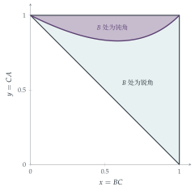

STEP III 1990，第 16 题
继续之前，请先阅读题目（原题为英文）。题目载于 STEP Support Programme 的题目资料库： step.maths.org/questions/90-s3-q16
引子
在一根木棒上随机选两点，把它折断。三段木棒能否组成三角形？著名的答案是：概率（probability）为 \(\frac14\)。如果能组成三角形，它是锐角（acute）三角形还是钝角（obtuse）三角形？通常是钝角三角形：所组成的三角形中，只有大约三分之一是锐角三角形。这类关于随机图形的问题，自十九世纪起便令概率学家乐此不疲，也是练习处理连续概率（continuous probability）的绝佳场地：区域内的一个随机点、一个界定子区域的条件，以及一个计算其面积的积分。
本题采用两种不同的折棒方法，并在每种情况下问出现钝角的可能性有多大。答案 \(3 - 2\sqrt2\) 和 \(3 - 4\ln2\) 都是出人意表的数，却源自简单的几何。
动笔之前
三个长度能组成三角形，当且仅当每一个都小于其余两个之和。如果三个长度之和为 \(L\)，这对最长的一个有何含意？边 \(c\) 所对的角何时是钝角？
\(c < a + b\) 连同 \(a + b + c = L\)，即 \(c < \frac L2\)；所以三段能组成三角形，正正是当每一段都短于总长度的一半。根据余弦公式（cosine rule），\(c\) 所对的角是钝角，正正是当 \(c^2 > a^2 + b^2\)。
逐步解题
阶段 1 先折一次，再对半分
三段的长度是 \(X\)、\(\frac{1 - X}{2}\)、\(\frac{1 - X}{2}\)。两段相等的木棒必定短于 \(\frac12\)，所以能组成三角形当且仅当 \(X < \frac12\)。这个三角形是等腰（isosceles）三角形；两个相等的角都是锐角，所以只有当 \(X\) 所对的角是钝角时，它才是钝角三角形： \[X^2 > 2\Bigl(\frac{1 - X}{2}\Bigr)^2 = \frac{(1 - X)^2}{2}, \qquad\text{即}\qquad \sqrt2X > 1 - X, \quad X > \frac{1}{1 + \sqrt2} = \sqrt2 - 1.\] 已知 \(X < \frac12\) 时，\(X\) 在 \([0, \frac12]\) 上均匀分布（uniform），所以 \[\mathrm{P}(\text{钝角} \mid \text{三角形}) = \frac{\frac12 - (\sqrt2 - 1)}{\frac12} = 3 - 2\sqrt2 \approx 0.172. \qed\]
阶段 2 第二种构造方法
设 \((x, y)\) 位于以 \((1, 0)\)、\((1, 1)\)、\((0, 1)\) 为顶点的三角形内，对边长 \(x\)、\(y\) 和 \(2 - x - y\) 检查三条三角不等式（triangle inequality）。
该区域是 \(\{x \leq 1, y \leq 1, x + y \geq 1\}\)。三条不等式分别是：\(x + y \geq 2 - x - y\)，即 \(x + y \geq 1\)；\(x + (2 - x - y) \geq y\)，即 \(y \leq 1\)；以及 \(y + (2 - x - y) \geq x\)，即 \(x \leq 1\)。它们在区域内全部成立（在区域的边上等号成立，此时三角形是退化（degenerate）的）。■
\(B\) 处的角所对的边是 \(CA = y\)。把条件 \(y^2 > x^2 + (2 - x - y)^2\) 写成关于 \(y\) 的不等式。
展开得 \(y^2 > x^2 + 4 + x^2 + y^2 - 4x - 4y + 2xy\)，所以 \(4y - 2xy > 2x^2 - 4x + 4\)，即 \(2y(2 - x) > 2(x^2 - 2x + 2)\)。由于 \(2 - x > 0\)， \[\angle ABC \text{ 为钝角} \iff y > \frac{x^2 - 2x + 2}{2 - x}. \qed\]
阶段 3 面积
以 \(2 - x\) 除 \(x^2 - 2x + 2\)。然后求区域中位于曲线上方那部分的面积，再除以区域的面积 \(\frac12\)。
由于 \(x^2 - 2x + 2 = -x(2 - x) + 2\)，曲线是 \(y = -x + \frac{2}{2 - x}\)。它由 \((0, 1)\) 伸延至 \((1, 1)\)，而当 \(0 < x < 1\) 时，它位于直线 \(y = 1 - x\) 之上、\(y = 1\) 之下（图 12.21.1）。钝角区域位于曲线与 \(y = 1\) 之间，面积为 \[\int_0^1\Bigl(1 + x - \frac{2}{2 - x}\Bigr)\mathrm{d}x = 1 + \frac12 + \bigl[2\ln(2 - x)\bigr]_0^1 = \frac32 - 2\ln2.\] 除以 \(\frac12\)：\(\mathrm{P}(\angle ABC \text{ 为钝角}) = 3 - 4\ln2 \approx 0.227\)。■

回顾
把几何转化为不等式。“能组成三角形”和“是钝角三角形”都化成了各长度之间的不等式。
连续变量的条件概率（conditional probability）。已知 \(X < \frac12\) 时，\(X\) 在较小的区间上均匀分布。
概率即面积之比。对于区域内均匀分布的点，概率等于面积除以总面积。
背后的数学
经典的折棒问题
在两个独立而均匀分布的点 \(U\) 和 \(V\) 处把木棒折断。数对 \((U, V)\) 在单位正方形上均匀分布，而三段能组成三角形，正正是当每一段都短于 \(\frac12\)：这个条件切去四个小三角形，总面积为 \(\frac34\)，余下的概率是 \(\frac14\)。已知能组成三角形时，它是锐角三角形的概率是 \(\frac14\) 当中的 \(3\ln2 - 2 \approx 0.079\)，即大约 \(32\%\)。这三段木棒是均匀随机分割（uniform random partition）的一个例子，它们的联合分布（joint distribution）是狄利克雷分布（Dirichlet distribution），这种分布出现在贝叶斯统计学（Bayesian statistics）中，也出现在描述资源如何随机分配的模型中。
怎样折断木棒，大有关系
请留意，题目中的两种方法，对听起来相似的问题给出了不同的答案 \(3 - 2\sqrt2\) 和 \(3 - 4\ln2\)，而两者又都与经典方法的答案不同。正如贝特朗（Bertrand）的弦（第 12.3 节）一样，在指明具体程序之前，“随机”一词毫无意义。
关于随机三角形的问题，是维多利亚时代流行的趣题。路易斯·卡罗（Lewis Carroll）的 Pillow Problems（1893 年）问及“随机”选取的三角形是钝角三角形的概率，而他的答案，正如本节的答案一样，完全取决于他所选择的随机性模型。关于随机三角形的问题一直带来惊喜：例如，在正方形内均匀随机选取三点，它们组成钝角三角形的概率约为 \(0.725\)，这个数值到二十世纪才有人准确算出。
思维技巧
把随机结果表示为区域内的一点，把事件表示为子区域，并以面积之比（或密度（density）的积分）计算概率。
在大学里，这幅图像是多元概率（multivariate probability）的基础，也是变量代换公式（change-of-variables formula）的基础；这条公式说明坐标改变时，密度如何随之变换。
延伸练习
经典问题。证明：若在两个独立而均匀分布的点处把木棒折断，则各段能组成三角形的概率是 \(\frac14\)。
折断较长的一段。在一个均匀分布的点处把木棒折断，然后在较长的一段上取一个均匀分布的点，再把它折断。证明三段能组成三角形的概率是 \(2\ln2 - 1 \approx 0.386\)。
锐角还是钝角。在第 (ii) 部分中，求三角形 \(ABC\) 在 \(C\) 处（对边为 \(AB = 2 - x - y\)）有钝角的概率。由此求它有任何一个角是钝角的概率。
最长一段的期望长度。对于经典的折棒问题，证明最长一段的期望（expected）长度是 \(\frac{11}{18}\)。
延伸阅读
Martin Gardner, The Colossal Book of Mathematics（Norton），书中收录了折棒问题。
Frederick Mosteller, Fifty Challenging Problems in Probability（Dover）。
Lewis Carroll, Pillow Problems（Dover，与 A Tangled Tale 合订）。维多利亚时代的趣题，包括随机三角形。